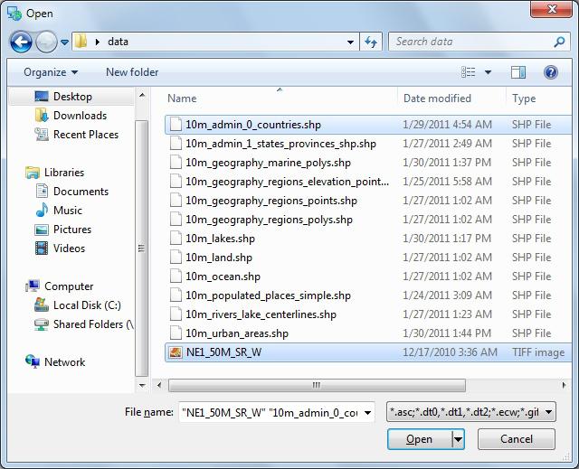
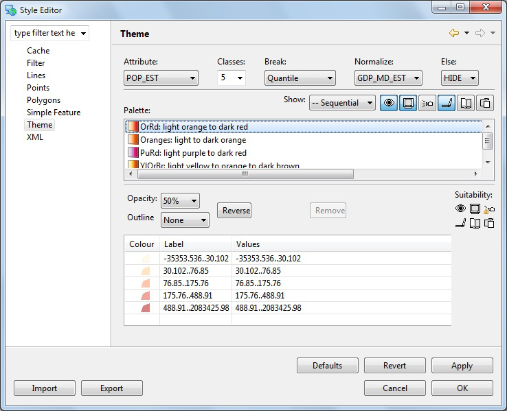
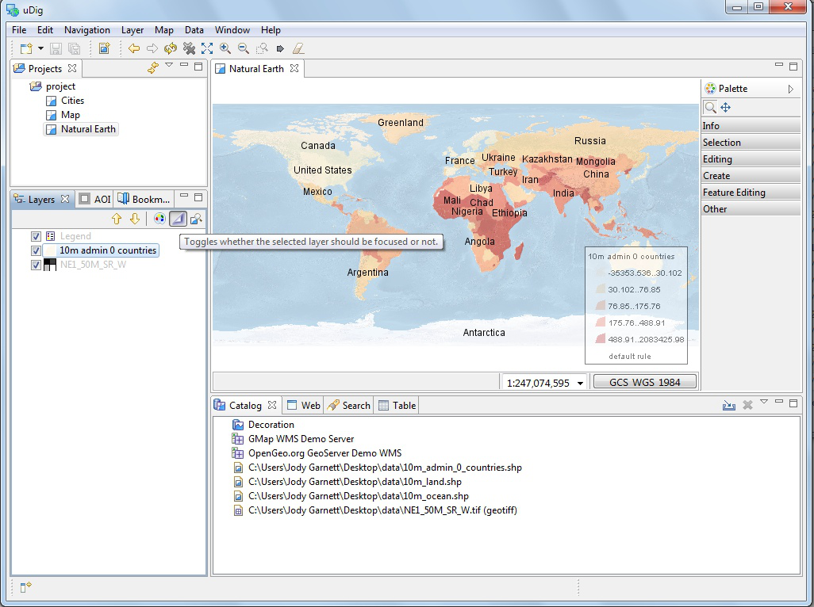
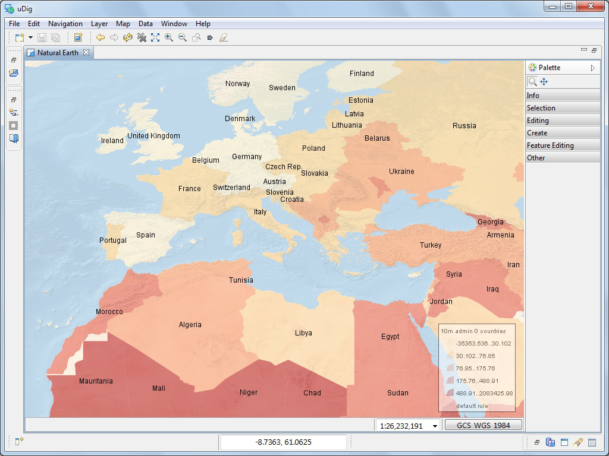
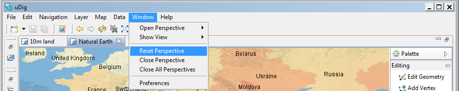

Style Editor¶
The Style Editor allows fine grain control of the layer rendering. In addition to shapes, layers contain attribute values which we can use to control the rendering process.
In this section we will create a Styled Layer Descriptor (SLD) file with the uDig Style Editor in order to generate labels and theme by attribute values.
Create a new map using File ‣ New ‣ New Map
Select your new map in the Projects view, and right click to choose Rename.

Enter the name Natural Earth and press OK.
In the Layer menu, select Add
Choose Files from the provided list and press Next.

Select the following files from your data directory:
- 10m_admin_0_countries.shp
- NE1_50M_SR_W.tif
On windows hold down the control key to selecting multiple files.

Press Open and both layers will be added to your map and rendered with a default style.
- The default style for the 10m admin 0 countries layer is slightly transparent so can see the base raster layer.
- You may wish to zoom out using the toolbar Zoom Extent command
Right click on the countries layer and select Change Style to open the Style Editor.

The Style Editor is arranged into a series of pages.
Select the Polygons page from the list on the right.
We will use this page to add labels to the countries layer.
Click the Labels tab on the Polygon page.
- Enable labels by checking the enable/disable labelling checkbox
- In the list to the far right of label choose the NAME attribute

You can press the Apply button to see what your map will look like with labels
Theme¶
A common use for maps is as a visual display of attribute values. In cartographic terms this is known as creating a Thematic map, accomplished by defining a theme for a layer.
The Style Editor is used to theme data by setting up a thematic style for a layer based on attribute values.
Please switch to the Theme page and select the following:
- Attribute: Select the POP_EST attribute.
- Normalize: Select the GDP_MD_EST attribute.

Filter the available colour palettes to show a subset of those available:
- Show: Change from guilabel:Show All to Sequential
- Press the Colour-blind, LCD and CRT buttons
- Select the light orange to dark red color palette

These options show palettes which are a ramp of color suitable for viewing by color blind people on either an LCD or CRT monitor.
Press the OK button

The countries layer is now displayed as theme of population data normalized by gross domestic product as a quick measure of population productivity.
Legend¶
You can use a legend to review the colours and symbology used to illustrate your themaitic map.
From the menubar select Layer ‣ Legend.

The Legend decorator offers a quick summary of your themed data.
Mylar¶
The map display can become very complicated depending on the level of detail being displayed.
The Mylar functionality is used to focus on the selected layer.
Press the Mylar button in the Layers view toolbar.
Select each layer and observe the effect.

The Mylar effect is used to focus on the selected layer by fading out everything else.
Layout and Perspectives¶
Map editors can be resized and expanded
- Double click on the Natural Earth editor tab to maximize the editor display.
- Use using the zoom tool to explore the world while the editor is maximized.

- Your Layer view is still available as a fast view the left hand side of the screen. Press Layer view button to slide the layer view on and off the screen as needed.
- Double click on the Natural Earth editor tab again to restore the previous size.
You can also open two map editors and arrange them side by side by dragging the Map editor tab into position.
You have a lot of flexibility in arranging views around your Map editor.
- You can drag views into different locations along the edge of your map by dragging their View tab into the desired location.
- You can detach a view by dragging it completely out of the window
- You can right click on the view for more options including a slide out Fast view.
- More views are available using the menubar Window ‣ Show Views
The arrangement of the Workbench editors and views is called a Perspective.
- Switch between perspectives using the menubar Window ‣ Open Perspective
- Use the menubar Window ‣ Reset Perspective to restore any views you accidentally closed during experimentation.
